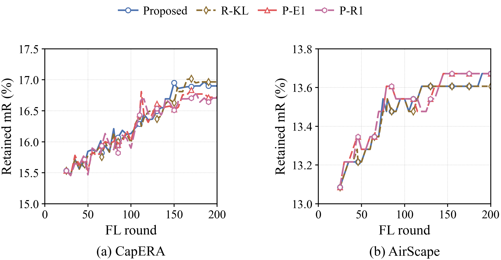
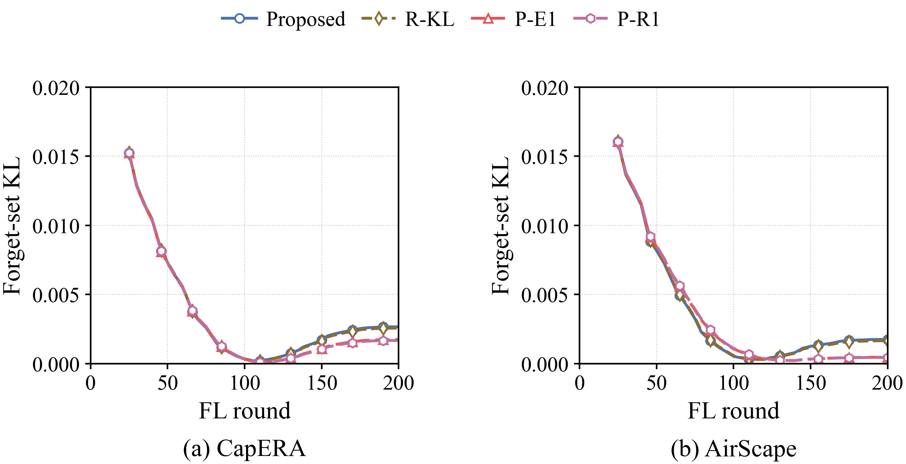
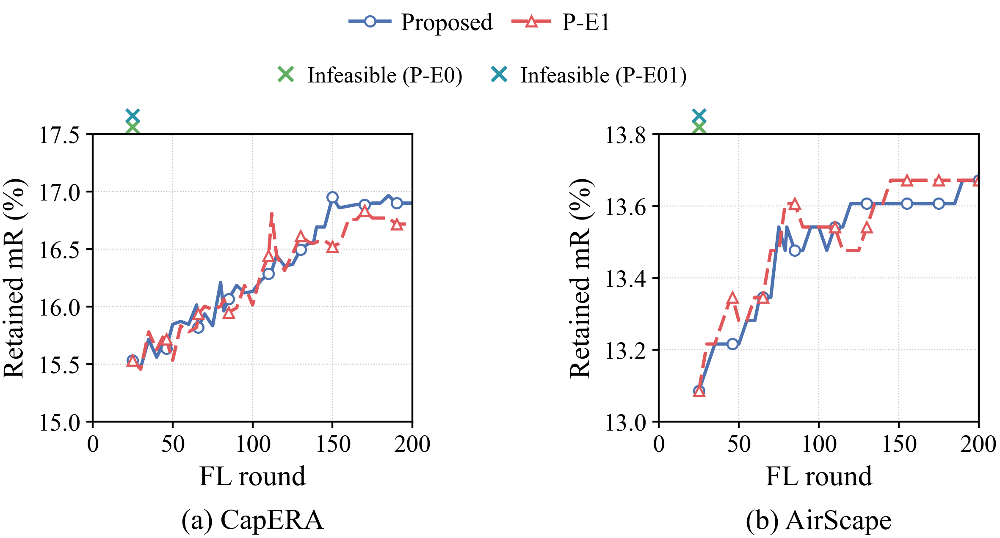
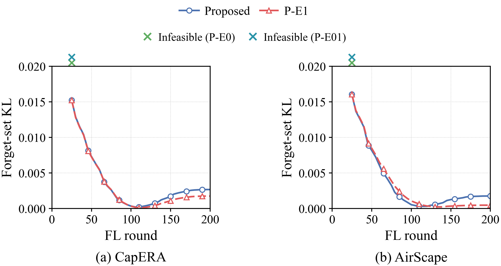
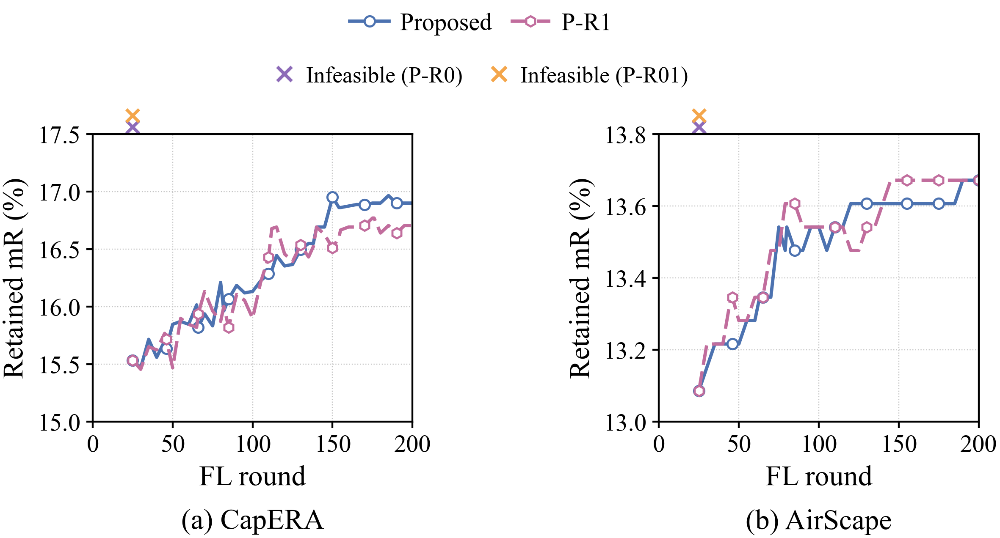
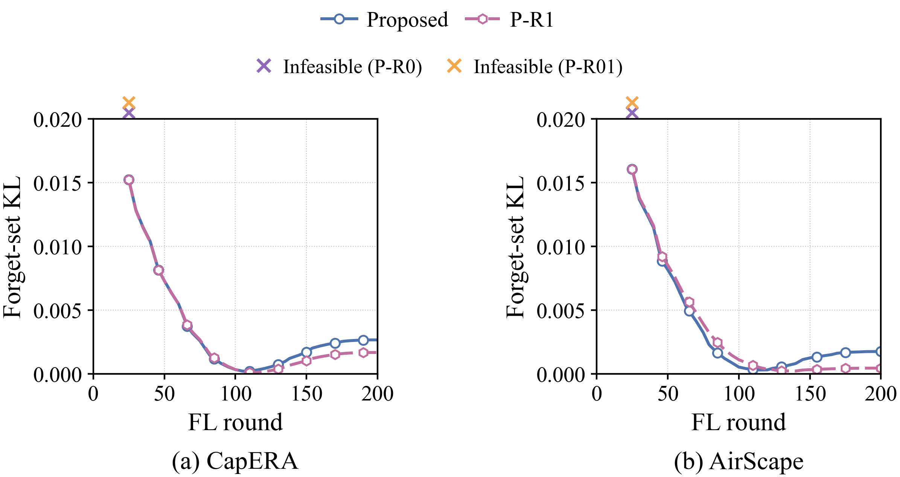

검색 분포를 직접 다루는 FU 후보
CapERA · AirScape | seed 0 · 1 MHz · 200 FL rounds · 45×5 FU steps. 전체 CSV · 실행 전에 고정한 조건 · 검증
목표함수는 3×삭제 항 + λR×유지 CE + 3×보존 항이다. R-KL은 기존 양성쌍 cosine 삭제를 유지하고 보존 항을 양방향 검색 KL로 바꾼다. P-E는 삭제 항을 기존 clean proxy20의 검색 KL로 바꾸고 임베딩 보존을 유지한다. P-R은 두 항 모두 검색 KL을 사용한다. 접미사 0/01/025/05/1은 λR=0/0.1/0.25/0.5/1을 뜻한다. 모든 후보를 표시하며 기존 방법은 수정하지 않았다.
첫 단계 전체 후보 · 가중치 0.25/0.5 후속 탐색
이 결과는 기존 검증셋에서의 방법 개발 실험이다. 후보 선택 후 새로운 paired seed와 독립 데이터 분할에서 확인하기 전에는 최종 우월성으로 주장할 수 없다. 전체 기존 방법 및 강화된 대조군과의 비교 판정을 CSV에 함께 기록했다. 기존 Proposed보다 낮은 mR도 숨기지 않았다.
학습 목적함수까지 바꾼 전체 시스템 비교이며, 전송 방식만의 인과적 효과를 입증하는 비교가 아니다. 새 목적함수를 동일하게 적용한 통신 대조군과 동등한 튜닝 예산의 비교가 추가로 필요하다.
삭제 teacher는 기존 비교 방법에도 제공된 retain-only proxy20이며 평가용 reference200을 사용하지 않았다. 이 proxy는 임무 전 삭제 대상 집합을 알고 준비했다는 기존 오프라인 가정을 이어받는다. 알려지지 않은 미래 요청에 대한 인과적 해법으로 주장하지 않는다. 추가 teacher 순전파와 검색 KL 행렬 연산 비용을 포함했고, 동일한 hard 송신 상한을 유지했다.
CapERA
AirScape
에너지는 FL/FU 처리의 통신+연산+호버이며 하드웨어 실측이 아니다. 모든 곡선은 저장된 평가값을 연결하며 처음 관측 전 값을 만들지 않았다. KL은 동일한 최종 reference200과 비교하므로 초반 값에는 학습 진행도 차이도 포함된다. 작은 KL이나 MIA gap은 삭제 보증이 아니다.

PDF · SVG

PDF · SVG

PDF · SVG

PDF · SVG

PDF · SVG

PDF · SVG
참고: CLIPErase (ACL 2025) · CLIP-KD (CVPR 2024) · Behavioral Guarantees for Proxy-Based Unlearning (2026 preprint). 본 실험의 조합은 탐색적 응용이며 해당 논문의 원래 실험이나 이론적 보장을 재현했다는 주장이 아니다.